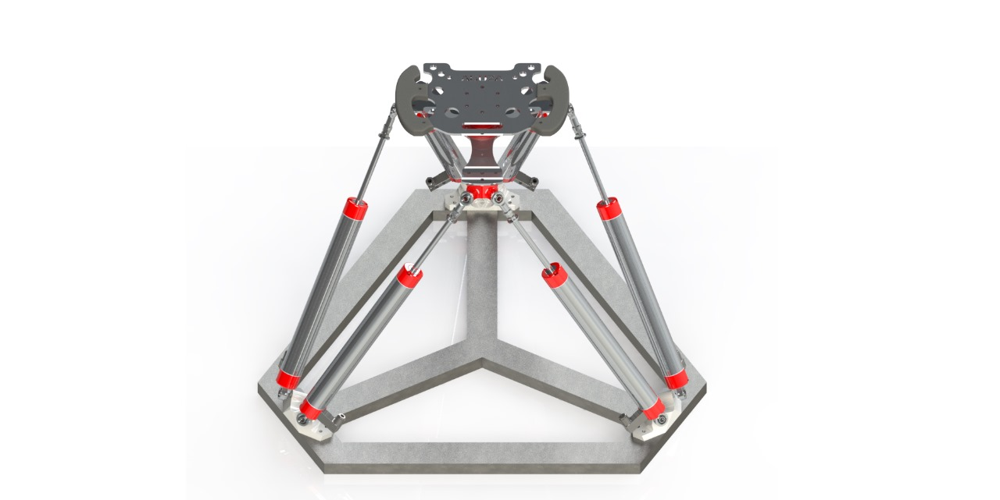
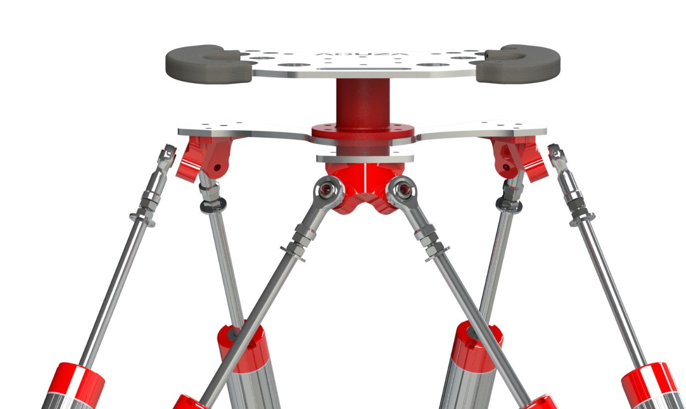

Clearance at the joints
Tri-axis inclined wedges orient the joints around the legs. Bushings act as spacers so the joint can rotate without contacting the wedge prematurely.
BACHELOR THESIS / MECHANICAL DESIGN
A physical interface for translating hand movement into six-dimensional spatial input.
Shobit Verma · IIT Dhanbad · Supervisor: Prof. Arun Dayal Udai
I designed and manufactured a Stewart–Gough platform as a hand-operated, potentiometer-based joystick. Six sensing legs connect the moving top assembly to a fixed base, allowing translational and rotational inputs through one physical interface. My work covered CAD, component procurement, custom wedges and joints, fabrication, error assessment, finishing, and assembly.
The intended application is intuitive input for larger parallel manipulators. The mechanical prototype is complete. Next steps include design-specific kinematics, electronics, and advanced control.
See the hardware in motionFROM GEOMETRY TO HARDWARE
The design had to accommodate six sensing legs, freely moving joints, and a comfortable handle while remaining practical to manufacture in the workshop.

Select a numbered componentCOMPONENT 01 / 04
The waterjet-cut aluminium handle extends beyond the top platform’s nominal circle to fit naturally in the hand. A connector joins the handle to the top plate; soft TPE grip pieces were specified for cushioning.

Tri-axis inclined wedges orient the joints around the legs. Bushings act as spacers so the joint can rotate without contacting the wedge prematurely.
The frame is truncated from the original polygon to leave space around the components. The home position places the potentiometers close to mid-extension.
The base-to-top geometry was chosen for maneuverability in a hand-operated device. Nylon supports also provide bolt recesses and friction beneath the base.
CAD → CUT → PRINT → FINISH
Different materials called for different processes. DXF profiles fed the waterjet workflow, STL files supported printed parts, and mild-steel pipes formed the welded base.
01 / WATERJET CUTTING
The top plate and handle were cut from 5 mm aluminium sheets using DXF profiles. The cut edges were filed before assembly.
02 / CUTTING + MILLING
8 mm nylon sheets were waterjet-cut, then milled with 10 mm diameter recesses to 6 mm depth to accommodate M6 bolt heads.
03 / 3D PRINTING
PLA wedges allowed design revisions without remachining metal. TPE was specified for the soft handle pieces, with printed parts sanded and filed for fit.
Print DXF profiles at 1:1 scale and paste them onto the pipes.
Cut the profiles and weld the pieces into the base frame.
Grind the edges, sand the frame, and apply red-oxide primer.
04 / LOCATE HOLES
The frame was too large for the available CNC mill. Its 500 × 500 mm working capacity could not accommodate the base. Cutting and welding also introduced dimensional variation, so the original printed layout could not simply be used to position the holes.
I calibrated the Yaskawa GP-12 to a reference point on the frame and entered the CAD hole-center coordinates into its teach pendant. The robot was then used to mark the drilling centers. This also helped assess the manufactured frame, whose radius was 6 mm smaller than the nominal design.
PARTS BECOME A WORKING MECHANISM
THE PHYSICAL PROTOTYPE
Watch the top assembly move while the sensing legs change extension and orientation. The hand-operated mechanism serves as the physical input device.
UNDERSTANDING THE RESEARCH METHOD
INVERSE KINEMATICS
For the 6-RSS robot, known platform poses are converted into actuator angles. These inverse-kinematics solutions generate the paired data used for learning.
FORWARD KINEMATICS
Given the six actuator angles, recover the end-effector’s position and orientation. The network learns this nonlinear relationship using a feedforward neural network.
The model receives θ₁ through θ₆ from the all-revolute 6-RSS manipulator. These are angular inputs from that robot, rather than direct linear-potentiometer measurements from this joystick.
Inverse kinematics generates Dataset 1 with 12,261,772 samples and Dataset 2 with 3,678,531 samples. The stated split is 59.5% training, 10.5% validation, and 30% testing.
After 1,000 epochs, the reference model achieved training MSE of 0.0087 and validation MSE of 0.0090, with average R² values of 0.9997 for Dataset 1 and 0.9996 for Dataset 2.
| Output | RMSE (mm) | MAE (mm) | R² |
|---|---|---|---|
| X | 0.1877 | 0.1342 | 0.9998 |
| Y | 0.1228 | 0.0970 | 0.9999 |
| Z | 0.1420 | 0.0903 | 0.9999 |
COMMANDS OUT / FEEDBACK BACK
In the 6-RSS reference implementation, inverse kinematics drives the physical robot and forward kinematics reconstructs its measured pose for a WebGL visual interface. The two directions have different jobs.
View Stewart coordinate points ↗
Position and orientation requested through the graphical interface.
Convert the desired pose into the robot’s six actuator joint angles.
An embedded controller commands six Dynamixel MX-64T motors.
Command path: requested pose → inverse kinematics → robot actuation.
Joint-angle feedback feeds the trained forward-kinematics model. Its estimated pose updates the virtual robot, allowing the interface to mirror movement of the physical manipulator.
A hand-operated Stewart replica with linear potentiometers can serve as an input device for a larger robot. Its trained 6-RSS angle-to-pose model would need a design-specific formulation and training to suit different sensing geometry.
The reference implementation uses Python 3.9, TensorFlow 2.11 and Keras for the model, pySerial for hardware communication, and a WebGL interface for visualization. Its embedded controller provides joint-angle and current feedback.
Model accuracy depends on the quality and coverage of the training data. Sparsely sampled workspace regions, changes to the mechanism, and different joint layouts require additional evaluation or a new trained model. Limited interpretability and untested payload-related effects remain areas for further work.
WHAT THE THESIS DELIVERED
Formulate design-specific kinematics with the measured geometry, build the electronic circuit, and implement and assess suitable control algorithms and machine-learning methods.
THE REGISTERED DESIGN
UK Patent ID: 6552818
GO DEEPER
Explore the project documents, CAD assembly, and prototype photographs.
Design, procurement, manufacturing, error assessment, and assembly.
PDF · 14 slidesThe CAD-to-hardware story with component and workshop photographs.
RequestGet in touch to request the assembly and individual part files.
XLSXMechanical components and electronics, including six linear encoders.